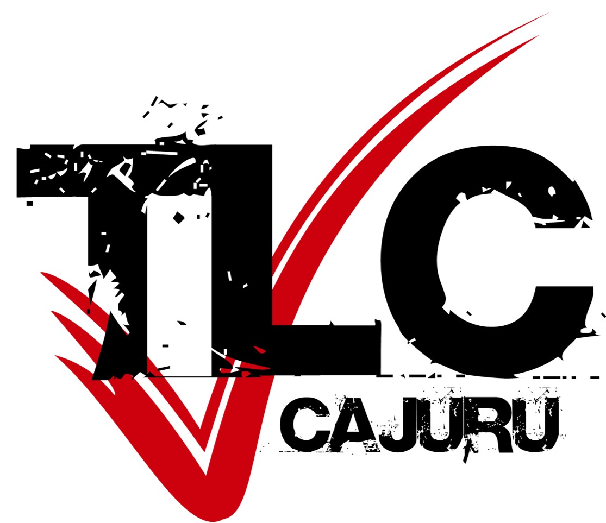

Formando líderes cristãos para transformar realidades e guiar a juventude.
Fundado no Brasil há mais de 30 anos pelo Padre Haroldo J. Rahm, Sj, o TLC nasceu da união inspirada de conceitos profundos de Santo Inácio de Loyola, do movimento de Cursilho e da Legião de Maria.
Com uma trajetória sólida e enraizada na Igreja Católica, o movimento consolidou-se como uma das principais ferramentas de evangelização juvenil do país, conectando jovens a um propósito maior de vida e comunidade.
Mais do que um retiro, o TLC é um instrumento projetado para despertar o potencial de liderança contido em cada jovem, capacitando-os para atuar ativamente na Igreja e na sociedade.
Fortalecer as bases da Pastoral da Juventude, criando núcleos de apoio, amizade e partilha onde o jovem encontre sustentação para sua caminhada cristã.
O objetivo central do TLC é dar ao jovem um sentido de vida profundo baseado nos ensinamentos de Jesus Cristo. Historicamente, o movimento atua como uma força de resgate, afastando e salvando muitos jovens de caminhos desafiadores, como as drogas e o alcoolismo, devolvendo-lhes a dignidade, a esperança e o foco.
Preparar o jovem para que, ao retornar do encontro, ele exerça uma liderança transformadora em seu ambiente familiar, estudantil, profissional e paroquial.